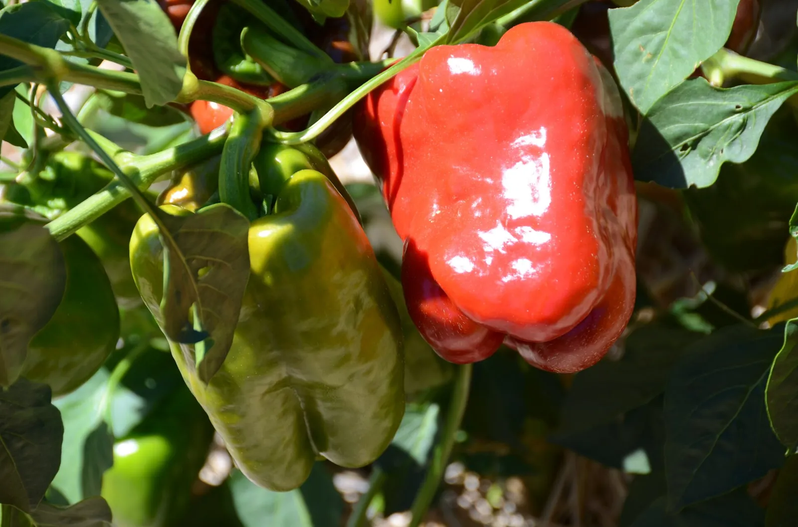

Tomatoes, peppers, beans and peas come true from saved seed. Squash, corn and the cabbages will surprise you. Which is which, and how to clean, dry and store seed.

Photo: Rob Bertholf · CC BY 3.0, via Wikimedia Commons.
What you need
Open-pollinated or heirloom varieties (the seed packet or label says which)
Your best plant of each, left unpicked to ripen fully
A glass jar for tomato seed, envelopes and a sealed jar for everything else
Save seed from open-pollinated tomatoes, peppers, beans or peas and you get next year’s plants for free, because those flowers pollinate themselves and the seed comes true. That’s most of the craft. The rest is knowing where the surprises are: hybrids that scatter, squash that crossed with the neighbor’s pumpkin, and carrots that don’t flower until their second year.
Which crops can I save seed from easily?
Tomatoes, peppers, beans and peas are the beginner’s crops for a structural reason: their flowers pollinate themselves, usually before they even open. Almost no outside pollen gets in, so the seed carries the parent’s own traits, and it needs little or no special treatment before storage. Grow an open-pollinated variety, let a fruit or pod ripen fully on your healthiest, most true-to-type plant, and you’re a seed saver.
That “healthiest plant” clause matters. Every year you save from your best plant, you’re selecting, steering the variety toward what thrives in your garden. It’s the oldest breeding program there is, and all it takes is attention.
Why didn't my saved seed grow like the parent?
The most common seed-saving disappointment is built into the label. The corpus carries it as a checked belief:
Seeds saved from hybrid vegetables grow true to the parent plant.
Seeds from a hybrid won't grow true to the parent. You get a mix of plant types, most of them worse. If you want seed that comes true, save it from open-pollinated varieties, and keep them from crossing with other varieties of the same crop. Saving hybrid seed is a fun experiment, but it won't keep a variety.
What is known
You can save and grow seed from an F1 hybrid, but it will not come true. An F1 hybrid is made by crossing two distinct inbred parent lines, and its seed (the F2 generation) produces a mix of plant types with an assortment of traits, most less desirable than the hybrid parent, in combinations nobody can predict. Open-pollinated varieties are the ones to save. Seed from plants pollinated by the same variety grows into plants very similar to the parent, though different varieties of the same crop can cross and give off-types.
It is impossible to predict exactly how the plant will perform or what qualities the fruit will have.
So read the packet before you plan to save. Open-pollinated means the variety reproduces true from seed. Heirloom means an open-pollinated variety old enough to have been handed down. Every heirloom is open-pollinated, but not every open-pollinated variety is an heirloom. F1 hybrid means the seed company crossed two parent lines on purpose; the cross is excellent, and its children are a lottery. Hybrids aren’t a trick. They’re often the most vigorous, disease-resistant choice for eating. They just aren’t for saving.
What about squash, corn, and the cabbage family?
Some crops refuse to keep to themselves, and their seed records whatever visited the flower. The mechanism is the same one that sets the fruit:
An insect-pollinated crop depends on an insect to move pollen between its flowers; no arrangement of plants substitutes for one.
If you skip this, it still grows, just less well. The planner suggests it.
How it works: A monoecious cucurbit bears pollen and ovules in separate flowers, so fertilization requires a vector to carry pollen between them. Neither wind nor self-fertility applies. Ovules that are not fertilized do not develop, and the fruit aborts or forms misshapen.
Evidence: checked against 4 sources in the research-based literature.
Summer squash flowers require insect pollination and are only open in the morning
Remedy
Nothing here can guarantee insects, and their absence cannot be diagnosed from a plant list. What you can change is whether anything in the garden is in flower while the crop is. Plants that feed insects near a fruiting crop are a reasonably supported suggestion. They are not a proven fix.
Bees carry squash pollen wherever squash flowers grow, so cucumbers, squash, melons and pumpkins cross readily. Your delicata’s seed may carry the neighbor’s jack-o’-lantern. Corn goes further: its pollen rides the wind, and popcorn can pollinate a stand of sweet corn from a nearby garden on a windy day. The cabbage family is the sneakiest of all. Broccoli, cabbage, kale, cauliflower, Brussels sprouts and collards are one species, so any two of them in flower at once will cross.
Keeping a crosser’s seed pure takes either distance or a physical barrier, such as bagging the flowers and pollinating by hand. Some of these crops raise the bar again by refusing their own pollen outright:
Some plants can't fruit from their own pollen, so they need a second plant of a different variety nearby.
If you skip this, you lose real yield. The planner warns you.
How it works: Many fruit trees carry self-incompatibility alleles at a single locus. When a pollen grain shares an allele with the pistil it lands on, the pistil rejects it and no seed sets. A plant's own pollen always shares its alleles, so it cannot fertilize itself. Neither can a second tree of the identical variety, which is genetically the same. Fertilization needs pollen from a genetically distinct plant.
Evidence: checked against 2 sources in the research-based literature.
Japanese plum exhibits gametophytic self-incompatibility (GSI), a prezygotic reproductive barrier where genetically related pollen is rejected by the pistil ... governed by a polymorphic locus (S) ... Self-incompatibility occurs when the same S-allele is expressed in the haploid pollen grain and the diploid pistil.
Remedy
Plant at least two, and where the species needs a second cultivar make them different varieties. Two of the same will not pollinate each other.
In a small garden, save the self-pollinators and buy fresh seed for the crossers. Or treat a crossed squash as what it is, a mystery variety with your garden’s name on it.
One more trap is about timing. Carrots, beets, onions and the cabbages are biennials. They spend their first year building the root or head you eat and only flower in year two, so saving their seed means leaving a plant in the ground (or overwintering the root) for a full extra season. It’s a fine project, but a poor first one.
How do I clean and dry the seed?
Beans and peas do the work themselves: leave pods on the plant until they’re brown and rattling, then shell them out.
Peppers are nearly as easy. Let a fruit turn fully ripe, scrape the seeds free, and dry them on a plate.
Tomatoes earn their extra step. The gel around each seed holds a germination inhibitor, so ferment it off: squeeze seeds and gel into a jar with some water, swirl it twice a day for about five days, and keep the seeds that sink. They’re the good ones. Rinse them clean and dry them thoroughly on a plate or towel.
Dry everything further than feels necessary. A seed that bends instead of snapping is still too wet to store.
How should I store it, and how long does it keep?
Keep seed cool, dark and dry. A tightly sealed glass jar in the refrigerator, between 0 and 5°C32 and 41°F, is close to ideal, and a packet of silica gel in the jar holds the dryness for about six months. Label everything with the variety and the year; February-you will not remember which envelope was which. The conservative rule from the extension literature is to use saved seed within a year. Many kinds last longer, but a quick indoor sprout test in damp paper towel beats an empty row in May.
Seed can carry disease between seasons. Bacterial canker rides tomato seed, for instance. Save only from healthy plants, and if a disease tore through a crop this year, buy clean seed for that one next spring.
Which crops don't need saved seed at all?
A few staples skip the seed packet entirely and are propagated from pieces of the plant: garlic from cloves, potatoes from seed tubers. Copies made this way are exact, which is convenient, and it’s also exactly why potatoes carry their own rule:
Potatoes are grown from certified seed potatoes (disease-free seed tubers from a certified source). Don't plant saved tubers or grocery-store potatoes. Large seed tubers are cut into blocky pieces, each with at least one eye, and the cut surfaces left to dry to a tough protective skin before planting. Grocery-store potatoes may be treated to stay dormant and can carry disease that persists in the soil.
If you skip this, it still grows, just less well. The planner suggests it.
How it works: Potato is propagated vegetatively (the crop grows from a piece of tuber), so any virus or disease in the seed tuber is passed straight to the new plants and can remain in the soil for years; certified seed is inspected, disease-free stock, which is why saving one's own tubers or planting grocery potatoes risks introducing disease. Each planted piece must carry an eye, the bud the new shoot grows from. A freshly cut piece exposes moist flesh that storage and soil rots colonise; holding the cut pieces a few days until the surface dries and forms a corky protective layer (suberises) seals that wound before planting. Grocery tubers may additionally be treated with a sprout inhibitor, so they are slow to grow.
Evidence: checked against 2 sources in the research-based literature.
When buying seed tubers, ask for certified seed as this will help reduce the potential for introducing disease into the garden
Remedy
Buy certified seed potatoes. Cut large ones into blocky pieces of about two ounces, each with at least one or two eyes; leave small tubers whole. Spread the cut pieces at room temperature (about 60-70 °F) for a few days until the cut surface has dried and formed a tough skin, then plant. Do not plant grocery-store potatoes (possible sprout inhibitor, and disease that lingers in the soil) and do not replant your own saved tubers year to year (virus and disease build up).
A saved potato copies everything, including any disease it picked up this season, so buy that crop certified. Garlic, on the other hand, is the easiest “seed” saving in the whole garden: keep your biggest, best heads, break them into cloves, and plant them in fall.
Further reading
Good places to read more about the technique on this page. The grade on each card comes from that card’s own sources.